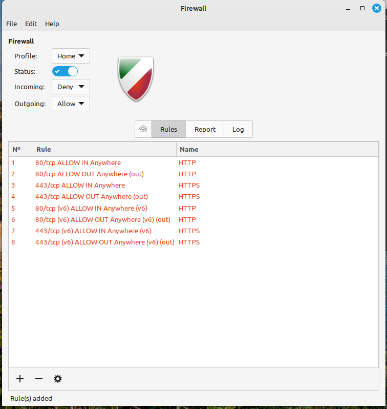
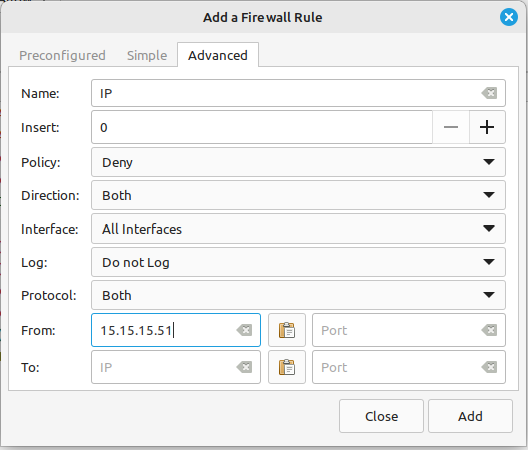
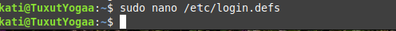

1. Asensin UFW ja GUFW. Käynnistin palomuurin ja tarkastin sen statuksen. Alla kuvakaappaukset prosessista:
2. Selvitin millaiset säännöt palomuurissa on oletuksena. Ei ollut vielä sääntöjä. Kuvakaappaukset asetuksista:
3. Sallin kaikki http ja https liikenteen koneelle. Kuvakaappaukset prosessista:
4. Kielsin kaiken saapuvan ftp liikenteen koneelle. Kuvakaappaukset prosessista:
5. Kielsin kaiken ulospäin lähtevän liikenteen koneelle porttiin 25. Kuvakaappaukset prosessista:
6. Kielsin kaiken liikenteen koneelle IP osoitteesta 15.15.15.51. Kuvakaappaukset prosessista:
ClamAV asennus ja järjestelmän skannaus.
Lisäksi suoritetut kovennustoimenpiteet 1 ja 3 listan mukaisesti. Dokumentoitu kuvakaappauksin:
Päivitys:
Yritin poistaa apachen, mutta sitä ei ollut edes asennettu. Mutta tällä tavalla se onnistuu. :
Lisäksi suoritetut lisäkovennustoimenpiteet listan mukaisesti. Dokumentoitu kuvakaappauksin:
Editoin login.defs tiedostoa ja Kävin vaihtamassa siten, että salasanaa voi vaihtaa korkeintaan viikon välein.
Asensin Lynis ohjelman ja katsoin millaisen auditointi raportin se minulle antoi.